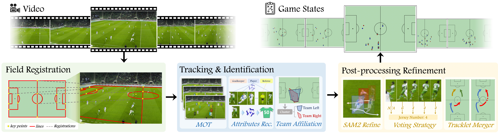
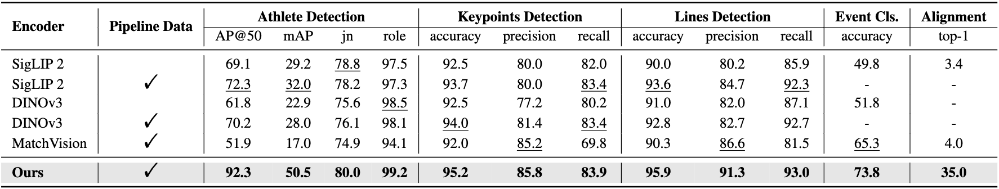
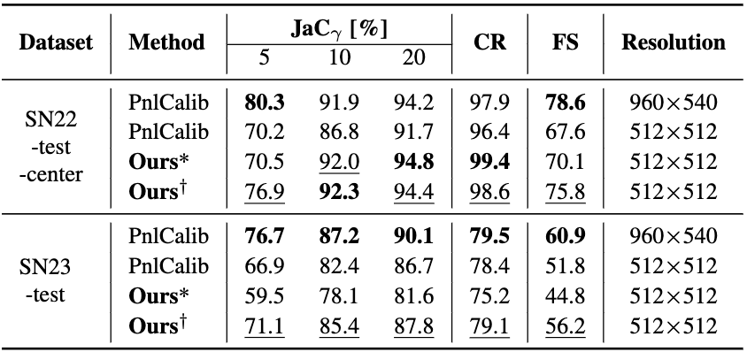
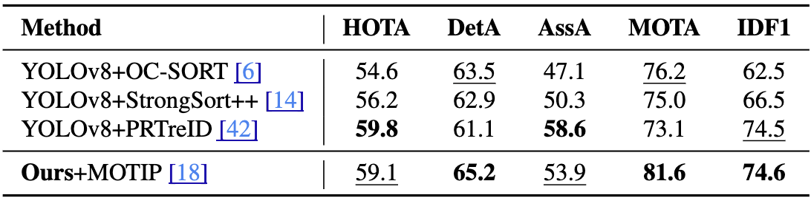
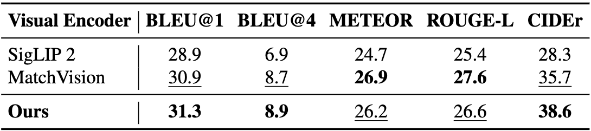
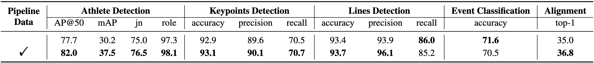

SoccerMaster: A Vision Foundation Model for Soccer Understanding
Abstract
Soccer understanding has recently garnered growing research interest due to its domain-specific complexity and unique challenges. Unlike prior works that typically rely on isolated, task-specific expert models, this work aims to propose a unified model to handle diverse soccer visual understanding tasks, ranging from fine-grained perception (e.g., athlete detection) to semantic reasoning (e.g., event classification). Specifically, our contributions are threefold: (i) we present SoccerMaster, the first soccer-specific vision foundation model that unifies diverse understanding tasks within a single framework via supervised multi-task pretraining; (ii) we develop an automated data curation pipeline to generate scalable spatial annotations, and integrate them with various existing soccer video datasets to construct SoccerFactory, a comprehensive pretraining data resource; and (iii) we conduct extensive evaluations demonstrating that SoccerMaster consistently outperforms task-specific expert models across diverse downstream tasks, highlighting its breadth and superiority. The data, code, and model will be publicly available.
Pretraining Dataset

Automated Data Curation Pipeline. Our pipeline processes input videos through three stages: (i) field registration establishes geometric correspondences between image and canonical pitch coordinates via keypoint detection; (ii) tracking and identification transforms frames into athlete trajectories through detection, role and team classification, and ReID-based tracking; and (iii) post-processing refinement improves tracking accuracy through SAM2-based segmentation and ensures temporal consistency via majority voting. The automatically generated data are integrated with existing datasets (SoccerNet-GSR, SoccerNet-v2, MatchTime, and SoccerReplay-1988) to construct SoccerFactory, a comprehensive pretraining dataset comprising 7.45M frames across 248.3K video segments for unified pretraining of both spatial perception and semantic reasoning tasks.
Architecture

SoccerMaster Architecture. (a) The architecture of SoccerMaster, which encodes both soccer videos and images through spatial and temporal attention modules to generate semantically rich representations. (b) The pretraining tasks and downstream adaptations of SoccerMaster across both spatial perception and semantic understanding tasks.
Experiments

Performance Comparison on Pretraining Tasks. We compare SoccerMaster against both general-purpose VFMs (SigLIP2-L/16-512 and DINOv3-L/16) and the soccer-specific MatchVision using frozen encoders with trainable task-specific heads. "Pipeline Data" indicates training augmented with automatically generated data from our pipeline alongside existing datasets. Metrics include AP@50 and mAP for detection, jersey number (jn) and role classification accuracy, keypoint/line detection metrics, event classification accuracy, and video-commentary retrieval top-1 accuracy (computed within batches of 48).

Performance Comparison on Camera Calibration. We evaluate against PnlCalib on SoccerNet-22 and SoccerNet-23 benchmarks. Metrics include Jaccard index (JaCγ) at thresholds of 5, 10, and 20 pixels, completion rate (CR), and final score (FS = CR × JaC5). Our zero-shot model (*) already outperforms PnlCalib on SN22-test-center, while fine-tuned model (†) establishes new state-of-the-art at 512×512 resolution with +8.2 FS on SN22 and +4.4 FS on SN23.

Performance Comparison on Multiple Object Tracking. We evaluate on the SoccerNet-tracking benchmark using standard MOT metrics. Unlike traditional tracking-by-detection paradigms that rely on separate detectors, Re-ID models, and complex post-processing, SoccerMaster employs an end-to-end pipeline. Our model achieves the best detection capability (DetA: 65.2), competitive association performance (AssA: 53.9), and strong overall tracking metrics (HOTA: 59.1, MOTA: 81.6, IDF1: 74.6), demonstrating effective transferability through lightweight fine-tuning.

Performance Comparison on Commentary Generation. We evaluate on the SN-Caption-test-align benchmark using standard natural language generation metrics including BLEU, METEOR, ROUGE-L, and CIDEr. SoccerMaster achieves the best results on BLEU@1 (31.3), BLEU@4 (8.9), and CIDEr (38.6), with notable improvements over the soccer-specific MatchVision (+2.9 on CIDEr). The strong CIDEr performance demonstrates that multi-task pretraining fosters rich semantic representations that effectively transfer to language generation tasks.
Ablation Study

Ablation Study on the Impact of Automatically Generated Spatial Annotations. We evaluate the effectiveness of incorporating pipeline-generated spatial annotations during pretraining. Using a compact SoccerMaster variant, the inclusion of pipeline-generated data yields substantial improvements in spatial perception tasks, particularly athlete detection (+4.3 AP@50, +7.3 mAP), while maintaining stable or slightly improved performance on other pretraining tasks. This confirms that our automatically curated annotations provide a reliable and scalable source of training data.
Qualitative Results

Qualitative Results of Automatic Data Curation Pipeline. Comparison between our predictions (left) and ground truth annotations (right) on the SoccerNet-GSR test set. Each detected athlete is annotated with five attributes: ID (tracklet identity), R (role), L (legibility score), JN (jersey number), and T (team affiliation). For field registration, detected keypoints and field lines are highlighted in yellow and red, respectively, while lines projected from the canonical pitch via estimated camera parameters are shown in blue. Our pipeline demonstrates robust performance across diverse scenarios, maintaining high accuracy in role classification, jersey number recognition, and team affiliation even under challenging conditions.

Top-view Pitch Visualization of Pipeline Results. Athlete positions are mapped to standardized pitch coordinates via estimated camera parameters. Each row is organized as: input image (left), our predictions (middle), and ground truth annotations (right). Athletes are color-coded by role: referees (orange, labeled "RE"), left team (red), and right team (blue). Non-referee athletes are labeled with arbitrary tracklet identities, which maintain temporal consistency within each tracking sequence. Notably, the number of tracklet identities in the predictions is not directly comparable to those in the ground truth; the emphasis is on consistent identity assignment across frames. The close alignment between predictions and ground truth demonstrates the pipeline's capability to accurately estimate camera parameters and maintain consistent athlete tracking, which can facilitate downstream applications such as tactical analysis.